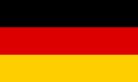
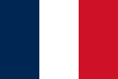
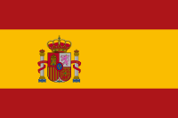
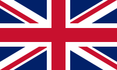
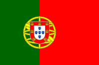
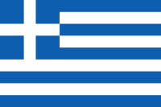
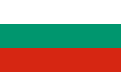
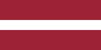
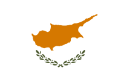
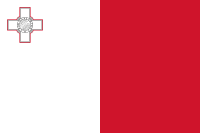

| NAZIONI CON IL PIU' ALTO TASSO DI INFORTUNI | ||
| Nazione | Infortuni | Infortuni fatali |
| GERMANIA  | 877501 | 397 |
| FRANCIA  | 771837 | 615 |
| SPAGNA  | 465227 | 323 |
| ITALIA |
291503 | 523 |
| REGNO UNITO  | 220985 | 249 |
| PORTOGALLO  | 130434 | 103 |
| NAZIONI CON IL PIU' BASSO TASSO DI INFORTUNI | ||
| Nazione | Infortuni | Infortuni fatali |
| GRECIA  | 4493 | 37 |
LITUANIA  |
3834 | 37 |
| BULGARIA  | 2255 | 87 |
| LETTONIA  | 2168 | 30 |
| CIPRO  | 2147 | 9 |
| MALTA  | 2001 | 4 |
Esso comprende gli organismi di sicurezza e salute sul lavoro statali e gli organismi autonomi di assicurazione contro gli infortuni. L'amministrazione statale (a livello federale e dei singoli stati) promulga leggi, regolamenti e disposizioni emanate da commissioni statali. Per migliorare, mantenere e promuovere la sicurezza e la salute dei lavoratori tramite una politica di sicurezza e salute del lavoro concordata e applicata in modo sistematico, l'amministrazione federale, i singoli stati federali e gli organismi di assicurazione contro gli infortuni hanno istituito la strategia tedesca comune di sicurezza e salute sul lavoro.
il ministero responsabile del lavoro, il quale elabora e pone in essere le politiche nazionali per la salute e la sicurezza sul lavoro, dando inoltre impulso alla concertazione con le parti sociali in seno al consiglio di orientamento per le condizioni di lavoro; organismi di previdenza sociale nel ramo degli infortuni sul lavoro e delle malattie professionali che contribuiscono alla prevenzione dei rischi professionali. Questo sistema, finanziato unicamente mediante accantonamenti da parte dei datori di lavoro, è gestito dalle parti sociali. Tra questi il principale è l`Agenzia francese di sicurezza sanitaria dell'ambiente e del lavoro, che concorre al miglioramento delle conoscenze in materia di prevenzione dei rischi professionali. L'Agenzia nazionale per il miglioramento delle condizioni di lavoro a sua volta ricopre un ruolo consultivo a favore delle imprese, agendo sul versante operativo della prevenzione dei rischi professionali.
Punto focale dell`Agenzia europea per la sicurezza e la salute sul lavoro In Spagna, la prevenzione dei rischi occupazionali è disciplinata dalla legge 31/95 e dai regolamenti che la integrano o la sviluppano. L'istituto nazionale per la sicurezza e la salute sul lavoro è l'organismo scientifico e tecnico dell'amministrazione generale dello Stato Per quanto riguarda le istituzioni dell'Unione europea e, in particolare, l'Agenzia europea per la sicurezza e la salute sul lavoro e la relativa rete, l'istituto agisce come punto focale nazionale, per garantire il coordinamento e la diffusione di informazioni nel paese.
L'autorità nazionale maltese responsabile della sicurezza e della salute sul lavoro collabora con l'amministratore delegato per definire strategie a livello nazionale sulla sicurezza sul lavoro. Inoltre, promuovono la diffusione di informazioni e metodologie per prevenire infortuni, malattie professionali e decessi. Le autorità raccolgono e analizzano i dati su infortuni, malattie professionali e altre questioni legate alla sicurezza e alla salute sul lavoro. Inoltre, svolgono indagini e promuovono le ricerche scientifiche per migliorare gli eventuali incidenti sul lavoro.
Il dipartimento dell`ispezione del lavoro è la fonte principale nazionale per Cipro. Il suo scopo fondamentale in ordine alla sicurezza e salute sul lavoro è assicurare livelli tali da consentire l'eliminazione o la riduzione drastica degli infortuni e delle malattie occupazionali e la protezione del pubblico dai rischi derivanti dalle attività lavorative. Il dipartimento è responsabile dell'organizzazione della rete d'informazione nazionale e partecipa alla preparazione e alla realizzazione materiale del programma dell'Agenzia. Il dipartimento collabora all'organizzazione della settimana europea per la sicurezza e la salute sul lavoro, bandisce il concorso europeo sulle buone pratiche nel campo della sicurezza e salute occupazionali.
Il punto focale lettone è amministrato dall`Ispettorato del lavoro dello Stato. Il flusso di informazioni è gestito dal Consiglio dell'informazione, costituito da rappresentanti di SSL del ministero del Benessere, dall'Ispettorato del lavoro di Stato, dalla Confederazione lettone dei sindacati, dalla Confederazione lettone dei datori di lavoro nonché dall'Istituto della sicurezza professionale e della salute ambientale. Uno dei compiti gestiti dal punto focale è il progetto del sito internet.